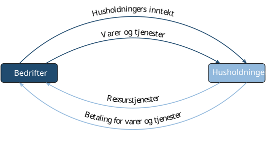
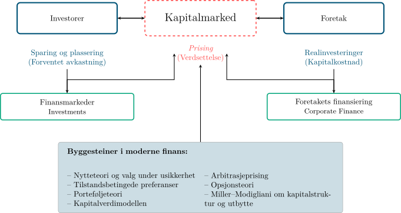
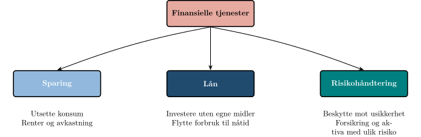
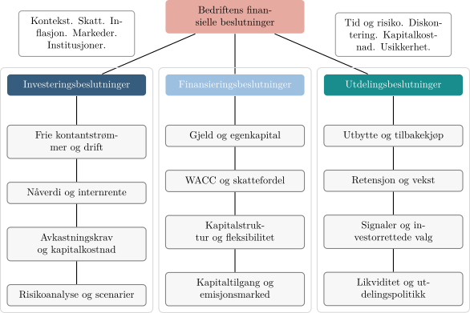

Investering og finans i en knapp verden
Bakteppet for kurset: hvor økonomifaget springer ut fra, og hvordan investorer, kapitalmarked og foretak henger sammen.
Økonomi handler om et enkelt, men evig problem: vi ønsker oss alltid mer enn vi kan få. Gapet mellom hva vi vil ha og hva vi faktisk kan skaffe er selve motoren i økonomifaget.
BED3 tar utgangspunkt i dette problemet og handler om hvordan vi organiserer de knappe ressursene bedrifter trekker på i sin daglige drift, hovedsakelig kapital. I investeringsanalysen ser vi på hvordan prosjekter må prioriteres når kapitalen ikke strekker til alt. I porteføljeteorien ser vi på hvordan kapitalen kan fordeles mellom aktiva for å balansere risiko og avkastning. I kapitalverdimodellen ser vi hvordan markedet priser risikokapital, og i kapitalstruktur analyserer vi hvordan bedrifter bør hente inn kapital gjennom gjeld eller egenkapital.
Kurset dekker også nærliggende temaer som gir et bredere bilde av hvordan kapital organiseres i en moderne økonomi. Vi ser på hvordan bærekraft og etiske hensyn påvirker investeringsbeslutninger, og introduserer opsjoner og terminkontrakter som verktøy for fleksibilitet og risikostyring. Vi undersøker også hvordan rentemarkedet for gjeldskapital fungerer og hvordan valutamarkedene setter rammer for investeringer og finansiering i en global sammenheng. Slik spenner BED3 over flere dimensjoner av det samme problemet: hvordan den knappe ressursen kapital kan brukes og prises på en måte som skaper mest mulig verdi gitt de ønsker og rammer samfunnet står overfor.
Opphavet og omfanget av økonomi
Hva er økonomi?
Et spørsmål det er naturlig å kunne svare på etter flere år med økonomistudier er: hva er økonomi? En foreløpig definisjon er at økonomi er studiet av hvordan mennesker bruker ressurser til å tilfredsstille sine ønsker. Ordet ønsker krever presisering. Vi ønsker alle mat, klær og et tak over hodet for å leve, men de fleste ønsker seg langt mer. Vi ønsker oss biler, større hus og feriereiser. Vår evne til å ønske er nesten uendelig, men ressursene i verden er begrensede. Med andre ord har vi knapphet på ressurser: behovene er større enn tilgangen. Dermed oppstår et gap mellom hva vi ønsker og hva vi faktisk kan få tak i. Å redusere dette gapet er den grunnleggende problemstillingen som studeres i økonomi. Knapphet tvinger oss til å velge, og økonomi er studiet av hvordan vi bør ta slike valg slik at vi ikke sløser med ressurser.
Det finnes to måter å minske avstanden mellom det vi ønsker oss og det vi kan få tak i: vi kan redusere ønskene våre, eller vi kan skaffe mer. Poeter, filosofer og religiøse tenkere har ofte anbefalt den første veien. Historien viser oss derimot at vi stort sett har valgt den andre, med varierende og ofte vanskelig målbar suksess. Som økonomer tar vi ikke stilling til hvilken vei som er best, men fagfeltet vårt er avgrenset til å studere den andre veien.
Men hva er det egentlig vi ønsker oss mer av, og hva faller innenfor økonomiens domene?
Mer av hva
Økonomifaget retter særlig oppmerksomheten mot hvordan vi kan skaffe mer av goder (en samlebetegnelse på varer og tjenester) som både tilfredsstiller ønsker og kan omsettes i et marked. Slike nyttige og knappe goder kalles økonomiske goder. Alle andre goder omtales som ikke-økonomiske goder.
Det finnes mange goder som ikke kan omsettes, som atletiske evner, venners gunst eller familiens kjærlighet. Disse kan være vel så viktige som økonomiske goder, men mennesker ser ut til å foretrekke en kombinasjon av begge typer. Videre finnes det goder som det er rikelig med tilgang på, som luft og sjøvann. Luft er livsviktig, men siden det ikke er knapphet på det, regnes det ikke som et økonomisk gode.
Så langt har vi derfor begrenset økonomi til studiet av hvordan mennesker søker å skaffe flere økonomiske goder: mer mat, flere klær, større hus, ny og bedre bil. Mer presist har vi definert økonomi som studiet av hvordan grupper organiserer bruken av ressurser for å oppnå dette målet.
Bruke ressurser: produksjon
Ressurser kan grovt deles i to hovedkategorier: mennesker og natur. Som mennesker bruker vi vår fysiske styrke og intelligens på ressursene som kommer fra naturen, og resultatet blir goder som kan tilfredsstille våre ønsker, som et brød, en fotballkamp eller et fly.
Dersom ressursene var ubegrensede, eller våre ønsker svært beskjedne, kunne vi produsere alt alle ville ha hele tiden. Da ville det ikke eksistert noe økonomisk problem, og dermed heller ikke noe økonomifag. Ressurser er alltid en mangelvare sammenlignet med hvor mye vi ønsker oss av de godene som produseres. Derfor må ethvert samfunn ta valg.
Når ressursene settes inn i produksjon, oppstår et samspill mellom husholdninger og bedrifter. Dette samspillet kan vi se tydelig gjennom velstandshjulet.
Velstandshjulet
For å forstå hvordan økonomien henger sammen, kan vi se nærmere på velstandshjulet. Husholdningene er de endelige eierne av ressursene og har behovene og ønskene som driver prosessen. Bedriftene er de organiserte enhetene som setter ressursene sammen til varer og tjenester som kan tilfredsstille disse ønskene. Når husholdningene kjøper varene og tjenestene, får bedriftene inntekter som brukes til å betale ressursene tilbake i form av lønn, renter og utbytte. På denne måten går ressursene i sirkel mellom husholdningene og bedriftene.

Velstandshjulet viser sirkulasjonen, men etterlater tre grunnleggende valg som alle samfunn må ta stilling til: hva, hvem og hvor mye.
Grunnleggende valg
Alle økonomiske systemer står overfor tre grunnleggende valg:
- Produksjonsvalget (hva-beslutningen): Hvilke varer og tjenester skal produseres, og hvor mye
- Produsentvalget (hvem-beslutningen): Hvem skal produsere dem
- Fordelingsvalget (hvor mye-beslutningen): Hvordan resultatene av produksjonen skal fordeles
De institusjonelle ordningene som bestemmer hvordan slike valg tas og håndheves, utgjør samfunnets økonomiske organisering, eller dets økonomiske system. Hvordan disse valgene tas varierer fra samfunn til samfunn, og det er nyttig å skille mellom planøkonomi og markedsøkonomi som to idealiserte ytterpunkter.
Typer økonomisk organisering
Selv om dette kurset ikke gir en full gjennomgang av økonomiske systemer, kan vi beskrive de to ytterpunktene slik:
- Planøkonomi: En sentral myndighet bestemmer hva som skal produseres, hvem som skal produsere det, og hvordan resultatet skal fordeles
- Markedsøkonomi: Beslutningene overlates til enkeltpersoner og bedrifter som handler ut fra signaler gitt av priser, ofte kalt prissystemet eller frimarkedssystemet
I praksis finnes det nesten aldri rene planøkonomier eller rene markedsøkonomier. De fleste systemer er blandinger av sentralisert kontroll og individuelle beslutninger.
Vestlige samfunn er i hovedsak markedsorienterte, og vi kan derfor legge vekt på hvordan de tre grunnleggende valgene ovenfor faktisk tas i en slik økonomi. I en markedsøkonomi skjer dette desentralisert. Hva som produseres avgjøres av husholdningene gjennom hvordan de bruker sine penger; kjøpene deres er i praksis stemmer som styrer produksjonen. Hvem som produserer avgjøres av bedriftene, men styres av profitt og tap: de som møter husholdningenes ønsker belønnes, mens de som ikke gjør det, taper. Hvor mye hver person får av det som produseres avgjøres gjennom prisene i markedet og størrelsen på inntekten; varer går til den som er villig til å betale mest, og inntekt bestemmes i stor grad av hvor produktive ressursene er. Dette gir sterke insentiver til effektiv ressursbruk, men skaper også ulikheter i fordeling. Hva som er en rettferdig fordeling ligger utenfor rammene for dette kurset; her fokuserer vi på hvordan ressursene best kan brukes til å maksimere antallet ønsker som faktisk blir tilfredsstilt.
Med dette rammeverket på plass kan vi presisere den foreløpige definisjonen:
Økonomi er studiet av hvordan mennesker organiserer bruken av knappe ressurser for å tilfredsstille sine ønsker.
Denne definisjonen får konkret innhold i BED3. Bedrifter må velge prosjekter som møter husholdningenes behov, og belønnes med profitt dersom de lykkes. Individer må investere sine midler slik at de balanserer avkastning og risiko, og disse investeringene gir samtidig kapital til bedrifter. Markedene samordner ressursbruken gjennom priser som sender signaler om hvor ressursene skaper mest verdi og tilfredsstiller flest ønsker. Samfunnet setter rammene gjennom lover, skatter, etikk og bærekraft. BED3 handler derfor om å forstå og analysere de grunnleggende mekanismene og modellene for hvordan knappe ressurser bør investeres og finansieres.
Fra økonomi til bedriftsøkonomi
Knapphetsproblemet gjelder ikke bare for husholdninger og samfunn, men også for bedrifter. Når vi studerer knapphetsproblemet i bedriftens kontekst, kaller vi det bedriftsøkonomi. Studerer vi det på individ- eller samfunnsnivå, kaller vi det personlig økonomi eller samfunnsøkonomi.
I finans stiller vi et mer spesifikt spørsmål: hvordan allokerer individer og samfunnet knappe ressurser gjennom et prissystem som verdsetter risikable aktiva? Her står kapitalen i sentrum. Med kapital mener vi ikke bare penger, men også maskiner og annet utstyr som er laget for bruk i produksjonen av varer og tjenester. Vi er opptatt av hvordan sparing fra husholdninger og investorer kanaliseres til bedrifter, og hvordan kapitalmarkedene setter prisen på risikable aktiva underveis. Dette gir oss et veikart for resten av faget.

Figur 2 viser hvordan denne prosessen ser ut i praksis. Til venstre finner vi investorene som tilbyr kapital. Til høyre finner vi bedrifter som etterspør kapital for å investere i prosjekter. Mellom dem står kapitalmarkedet, der prisen på risikable aktiva fastsettes. Nederst ser du de viktigste byggesteinene i moderne finans, som gir oss teoriene og verktøyene vi bruker til å analysere samspillet mellom investorer, bedrifter og kapitalmarkedet.
Investorer: husholdningenes rolle i finans
Husholdningene er de endelige eierne av kapitalen i samfunnet. Selv om kapital ofte forvaltes gjennom banker, forsikringsselskaper eller pensjonsfond, er det til syvende og sist husholdningenes sparing som ligger bak. Når husholdninger har mer kapital enn de trenger til forbruk i dag, kan de velge å utsette noe av forbruket og heller spare. Det gjør dem til investorer og tilbydere av kapital.
Å spare betyr å flytte forbruk fra nåtid til fremtid. Husholdninger tar derfor alltid stilling til tre spørsmål:
- Hvor mye vil jeg bruke i dag, og hvor mye vil jeg spare til senere
- Hvor lenge kan jeg binde pengene
- Hvor stor risiko er jeg villig til å ta for muligheten til høyere avkastning
Kapitalmarkedene gjør denne avveiningen langt enklere. De gir husholdningene mulighet til å plassere pengene i alt fra en trygg sparekonto til aksjer med høyere risiko og potensielt høyere avkastning. Markedet setter en pris på hva det koster å utsette forbruket, og denne prisen ser vi som renter og avkastningskrav.
Uten kapitalmarkedene måtte husholdningene selv investere direkte i prosjekter eller eiendeler, noe som er upraktisk og risikabelt. Med kapitalmarkedene kan kapital flyttes fra husholdninger som har penger, til bedrifter som har prosjekter, men mangler finansiering. Dette gjør at ressursene i samfunnet brukes der de skaper mest verdi.
Noen investorer har dessuten mål utover ren avkastning. De kan ønske å bidra til bærekraftige investeringer eller påvirke hvordan bedrifter driver sin virksomhet.
Et eksempel: Tenk på en student som har tjent 40 000 kroner på sommerjobb. Hun kan bruke hele beløpet på en ferie nå, eller hun kan spare halvparten i et aksjefond. Ferie gir høy nytte i dag, men ingen fremtidig avkastning. Sparing gir mulighet for mer forbruk i fremtiden, men innebærer risiko.
Senere i kurset ser vi nærmere på hvordan risiko og avkastning henger sammen når man velger å investere i ulike aktiva, hvordan diversifisering gjør at risiko kan reduseres uten å senke forventet avkastning (porteføljeteori), og hvordan risiko prises i markedet og danner grunnlag for avkastningskrav (kapitalverdimodellen).
Kapitalmarkedet: prissetting og allokering
For å forstå verdien av kapitalmarkedet, kan vi tenke oss en økonomi uten markeder. I en slik økonomi er det vanskelig for husholdninger å flytte forbruk over tid, og bedrifter kan bare investere i prosjekter de har kontanter til her og nå. All investering må skje med egne midler.
Kapitalmarkedet løser dette problemet. Det gir mulighet til å låne, spare og flytte ressurser på en måte som gjør alle bedre stilt enn de ville vært alene. Markedet knytter sammen tilbydere og etterspørrere av kapital. Ressurser allokeres gjennom et prissystem som reflekterer informasjon om risiko og avkastning. Dette skjer desentralisert, ved at prissignaler gir aktørene grunnlag for sine valg. Den sentrale funksjonen er å sørge for en effektiv ressursallokering.
Effektiv allokering oppnås ved at kapitalmarkedet leverer tre grunnleggende tjenester. Disse er oppsummert i Figur 3 nedenfor (basert på Døskeland, Investing for the Long Term, 2025).

- Sparing: gjør det mulig å utsette konsum. De som har mer kapital enn de trenger i dag, kan plassere pengene og bruke dem senere. Prisen på utsatt konsum settes i form av renter og avkastning.
- Lån: gjør det mulig å investere i dag selv uten egne midler. På den måten kan prosjekter med høy verdi realiseres. Å låne er å flytte forbruk fra fremtid til nåtid.
- Risikohåndtering: gjør det mulig å beskytte seg mot uønskede utfall. Dette kan skje gjennom forsikring eller ved å flytte kapital mellom aktiva med ulik risiko. Kapitalmarkedet sprer og deler risiko på en effektiv måte.
Effektiv ressursallokering er avgjørende for økonomisk vekst. Vekst er igjen en forutsetning for økt konsum og velferd over tid. Kapitalmarkedet bidrar til dette ved å kanalisere sparing til de mest lønnsomme investeringene og ved å gi både husholdninger og bedrifter mulighet til å håndtere risiko effektivt.
Foretaket: investering, finansiering og utbytte
I Figur 2 er foretaket plassert på høyre side. Foretaket er den aktøren som etterspør kapital. Samtidig er det selve motoren i verdiskapingen: det bruker kapital, arbeidskraft og ledelse til å produsere varer og tjenester som tilfredsstiller husholdningenes ønsker gjennom å investere i prosjekter. Prosjekter er investeringer i realaktiva, som består av fysiske (fabrikker, maskiner osv.) og immaterielle (patenter, merkevarer osv.) eiendeler. Når bedriften lykkes bedre med sine prosjekter enn konkurrentene, skaper den overskudd. Overskuddet gir eierne profitt, og profitt som er stabil og fremtidsrettet løfter verdien av bedriften.
I bedriftsøkonomi antar vi ofte at målet er profittmaksimering. Med profitt mener vi her økonomisk overskudd: inntekter minus både eksplisitte og implisitte kostnader, inkludert alternativkostnader. Bedriften skal bruke ressursene slik at dette overskuddet blir størst mulig. To grunnprinsipper følger av dette:
- De minste midler: produser med minst mulig ressursbruk
- De største resultater: få mest mulig ut av gitte ressurser
I finans går vi et steg videre. Vi antar ofte at bedriften er børsnotert, og at målet er å maksimere markedsverdien av selskapets aksjer, det vil si aksjekursen multiplisert med antall utestående aksjer. Markedsverdien reflekterer størrelsen, tidspunktet og sikkerheten til de forventede betalingene til aksjonærene. En usikker betalingsstrøm verdsettes lavere enn en sikker strøm med samme forventede størrelse. Dette målet er mer omfattende enn profittmaksimering, fordi det tar hensyn til både tid og risiko.
For å nå målet om verdimaksimering må bedriften ta tre typer beslutninger:
- Investeringsbeslutninger: hvilke prosjekter skal gjennomføres
- Finansieringsbeslutninger: hvordan prosjektene skal betales, med gjeld eller egenkapital
- Utbyttebeslutninger: hvordan overskuddet skal disponeres mellom eierne og videre investeringer
Figur 4 oppsummerer de tre beslutningene og hvordan de henger sammen i foretaket.

Målet om verdimaksimering har møtt kritikk. Mange mener at bedrifter også bør ivareta interessene til ansatte, kunder, leverandører og samfunnet for øvrig. Andre hevder at beslutningstakere i praksis ikke maksimerer, men heller søker en tilfredsstillende løsning, et prinsipp kjent som satisfiering (etter Herbert Simons begrep satisficing): man velger en løsning som er god nok, heller enn den absolutt beste.
I dette kurset legger vi likevel til grunn at bedriftens mål er å maksimere markedsverdien av aksjene, fordi dette best reflekterer eiernes interesser. Det betyr ikke at hensyn som bærekraft og samfunnsansvar er uviktige, men at de må integreres i beslutningene på en måte som også skaper verdi for eierne. Vi legger derfor til grunn at valg først og fremst må være økonomisk bærekraftige: prosjekter må gi kontantstrømmer som dekker kostnader, forrenter kapitalen og skaper avkastning i forhold til risiko. Uten økonomisk bærekraft kan selv gode intensjoner ikke opprettholdes over tid.
Oppsummering
Så, nå har du fått rammen for faget investering og finans:
- Husholdningene er de endelige tilbyderne av kapital.
- Kapitalmarkedet binder sammen sparere og bedrifter, og tilbyr sparing, lån og risikohåndtering.
- Bedriftene er motoren som bruker kapital til å skape verdier, styrt av målet om verdimaksimering.
Hvor begynner du?
Bakteppet du nettopp har lest spenner over hele kurset. Denne nettsiden huser de asynkrone videomodulene, investeringsanalyse og finansielle markeder og kontrakter, mens temaene imellom, fra porteføljeteori og kapitalverdimodellen til kapitalstruktur, utbyttepolitikk og bærekraftige investeringer, undervises i plenumsforelesningene med materiell på Canvas. Når de ulike delene kommer, ser du i timeplanen.
Herfra går veien videre til modulintroduksjonen til investeringsanalyse, som tar deg fra det store bildet ned til den første av bedriftens tre beslutninger: hvilke prosjekter foretaket skal investere i. Derfra fortsetter du til Del 1: Investeringsprosjekter.
Finner du feil eller noe som er uklart, si gjerne fra på andre.sjuve@nhh.no.